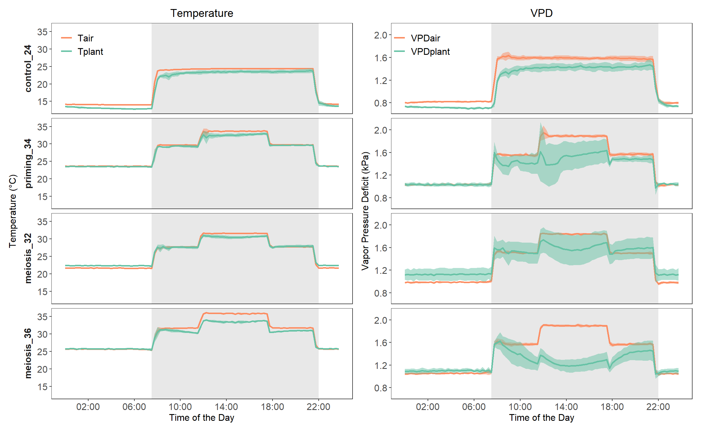
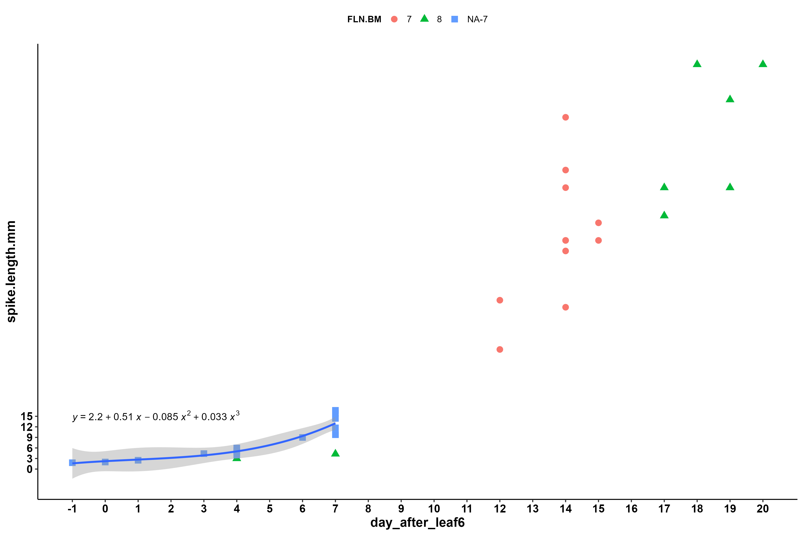

Ricochets_Presentation
1 Project intro
This is to test effects of recurrent heat stress on wheat ear fertility.
2 Experiment 1
experiment date: 2021-3 - 2021-4
This is to test effects of recurrent heat stress on wheat ear fertility.
2.1 Codes and plots
2.1.1 Growth conditions
There are 3 growth cabinets for the manipulation of different temperature treatments (Chamber A, Chamber B1 and Chamber B2): Chamber A is responsible for control and normal growth conditions, B1 and B2 are for priming stress and recurrent stress
priming stress period (6 days) in B1 from 14 Mar to 19 Mar
daytime saving occured between 2021-04-05 and 2021-04-06
par(light intensity) value in chamber A (control) is almost double than chamber B1 and B2
2.1.2 Leaf stage 6.0
Retrieve leaf stage 6.0 of main stem using linear regression, leaf stages before 4.0 are excluded, Plant 1rouge, 7rouge, 5blanc are not valid, the dates of leaf stage 6.0 for these 3 plants are manually added later
2.1.3 Spike length vs terminal spikelet stage
Retrieve spike length of terminal spikelet stage according to the anatomy observations
2.1.4 Spike length vs day after leaf 6
derive 3 missing points by average regressioned slope and the existing point
separate plant with 7 leaves and 8 leaves.

2.1.5 Lingule distance vs day after leaf 6
Filter plants with 8 FLN???, In this case, it is filtered out. Only plants with 7 FLN are kept.
lingule_distance_less_0.5_split
lingule_distance_less_0.5_togrther
Calculate ligule_slope_mean = 2.12
summarise(ligule_slope_mean = mean(slope, trim = 0.2))
Then, extract the minimum distance of ligule value and inverse the DAS when lingule distance is 0 to obtain the DAS of last lingule appearance
Together with the plants with lingule distance less than 0.5, regression can be made.

2.1.6 Tiller and spikelet flowering delay
preliminary + formal, no significant difference, so combine together
Only scenarios S0a, S0b, S1, S6 were included?????
2.1.7 ** Anther Length**
2.1.8
3 Experiment 2
This is to test effects of recurrent heat stress on wheat ear fertility.
4 Experiment 3
This is to test effects of recurrent heat stress on wheat ear fertility.